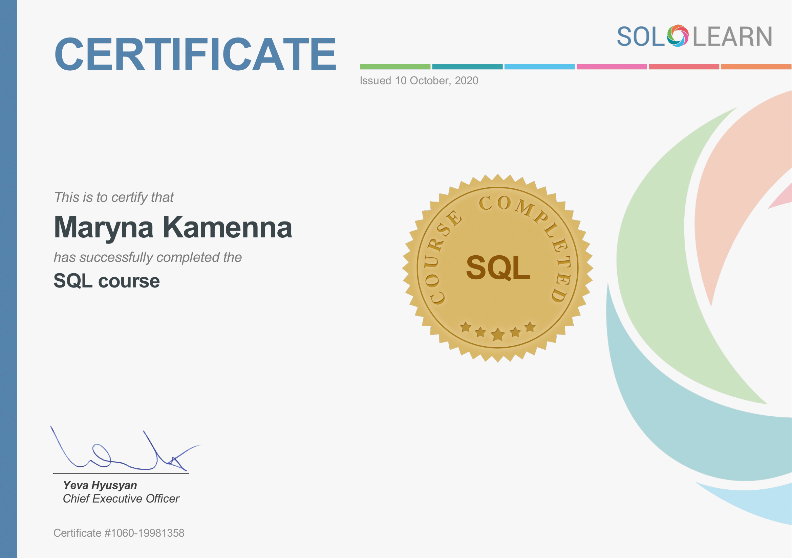

About me
Hello, my name is Maryna, and I am looking for Junior QA position in Odessa.
I have expirience in Web application testing whith API testing (Postman).
Performed all types of testing activities(static and dynamic) and has experience with all test documentation types.

Contacts & links
Telephone 8(063)133-07-11
Email marinastoneqa@gmail.com
Instagram www.instagram.com
LinkedIN www.linkedin.com
Tech skills
- HTML5&CSS
- GIT
- SQL
- Postman
- Jira, Trello, TestRail, CRM
Soft skills
- English (intermediate)
- Romanian (elementary)
- Selfeducation
- Agile
- Scram
- Teamwork
Work Expirience
Afenex Personal assistant
October 2018 - November 2019
- Performed general office duties and administrative tasks
- Schedule client appointments
- Managed the internal and external mail, calls.
- Provided telephone support.
Make-up artist Freelancer
Desember 2015 - March 2018
Ukrticket Theater casher
November 2013 - October 2015
- Increased recognizably and number of customers at the point of sale
- Information and sale of tickets for cultural and sporting events, tickets for he railway, air, buses
- Acceptance of cash, filling out receipts, keeping funds
"Своё Такси" Dispatcher taxy
September 2008 - October 2013
- Two months later, I became head dispatcher
- Over the past 5 years, taxi service has grown from 30 cars to 250, and the base of regular customers has grown by 10 times
- Maintain and develop existing customer base
- Providing reference information regarding prices, range and terms of ordering a taxi
- Providing telephone reception of customer orders
Education
Odessa National University of I.I Mechnikov
September 2006 - June 2014 Obtained the MS degree in Since Sociology
Hillel IT school
August 2019- December 2019
Practice for QA. API for QA(Postman)
April 2019- June 2019
BeetRoot Academy
October 2020 - now
Sertificates


